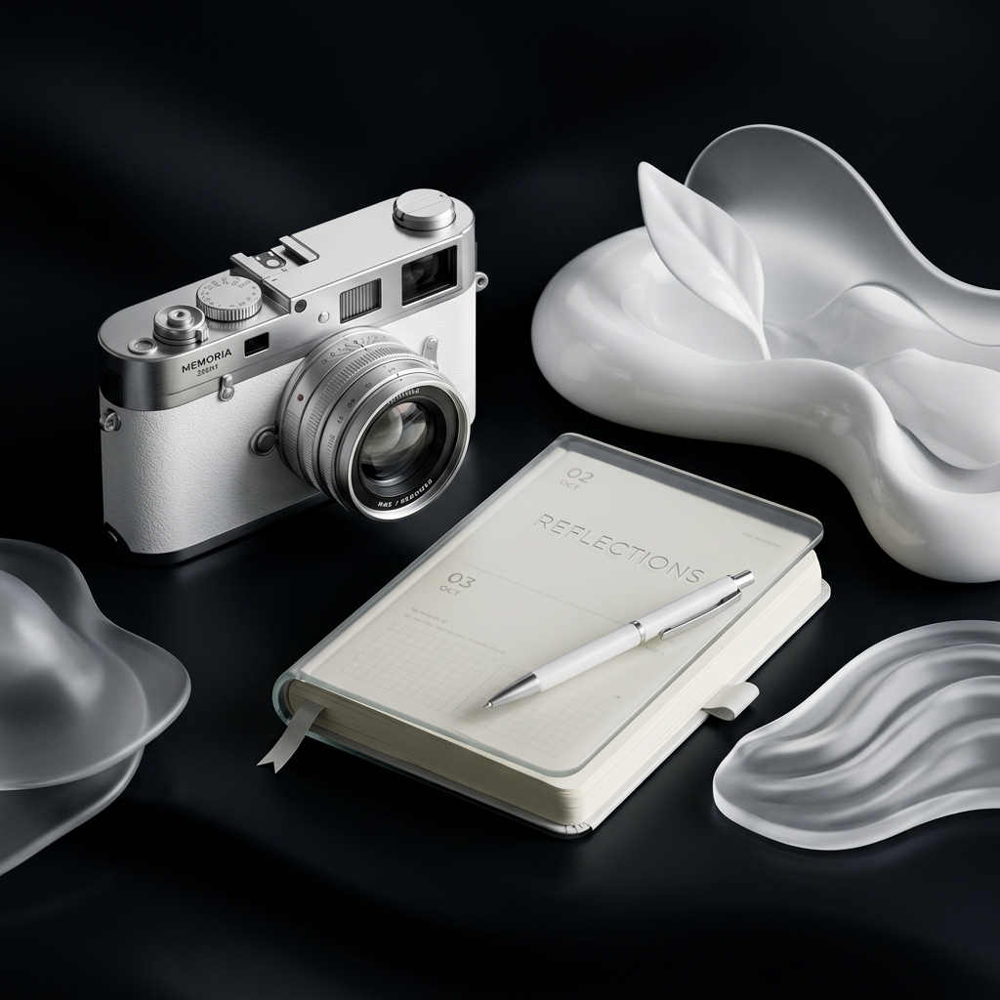
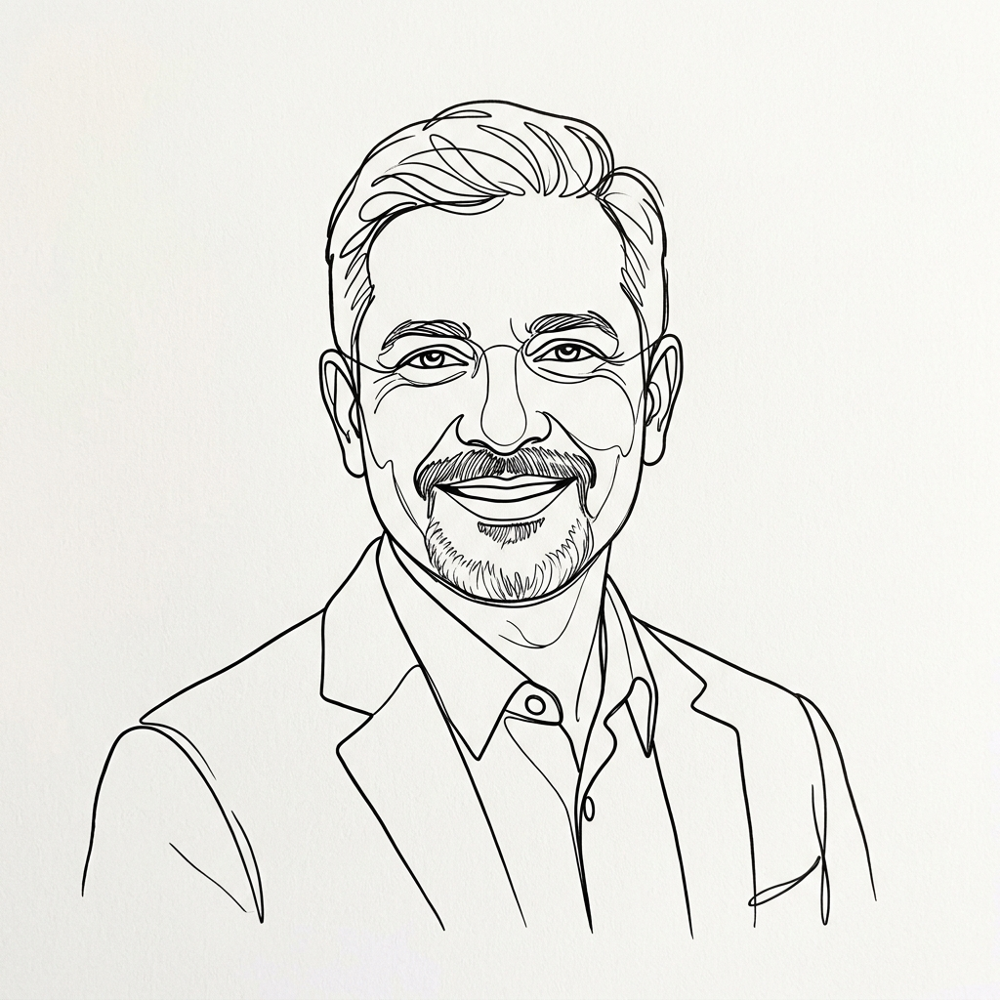
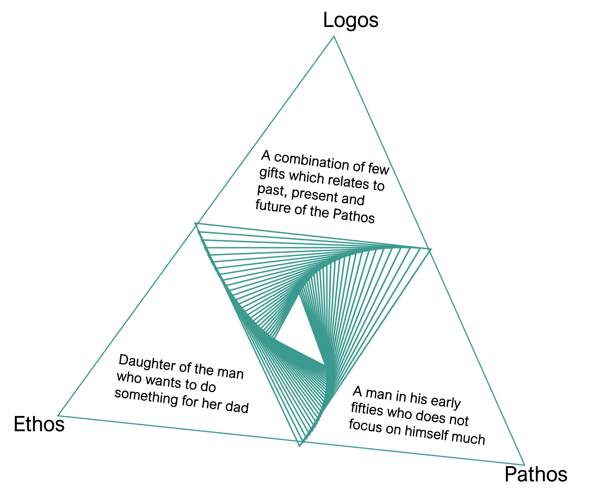
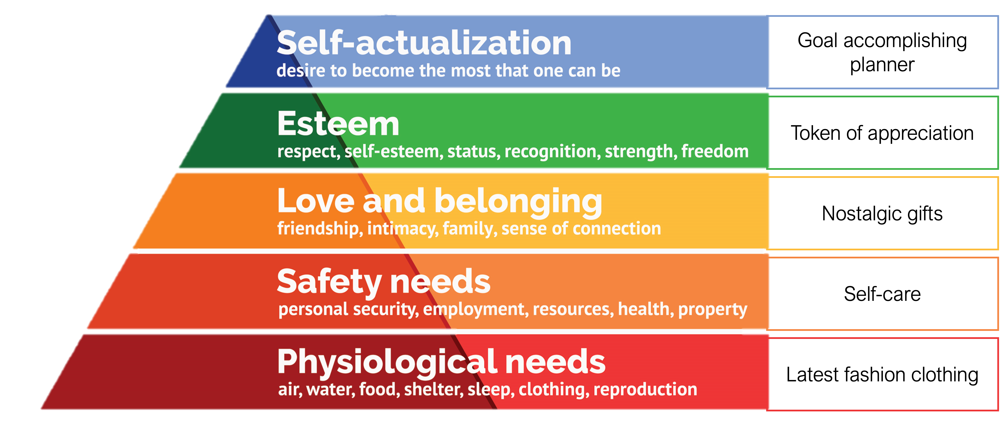
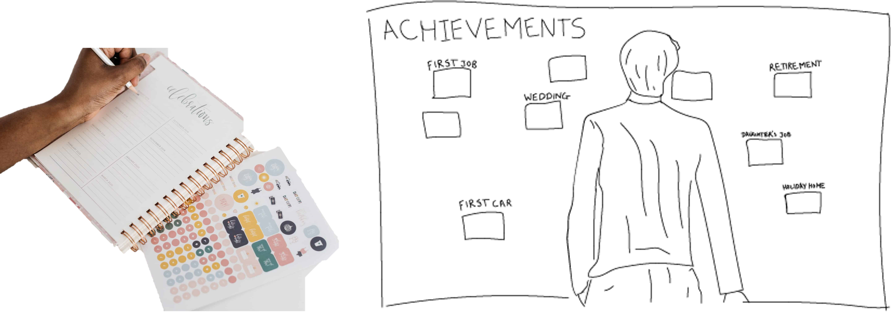
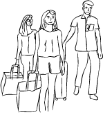
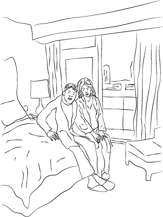
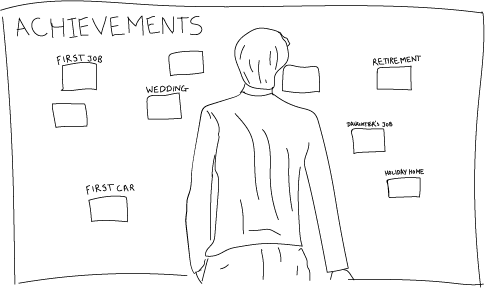

Team Overview
1 Product Designer
Family collaborators
Hybrid gifting ecosystem • Planning • Family connection
2-3 Weeks • Graduate Design Exercise
1 Product Designer
Family collaborators
Recipient research • UX strategy • Service design • Visual design • Prototyping
Interactive prototype concept • Printable kit • Journey map • Ecosystem model

Design challenge
The project began as a personal gift for my dad, but the design opportunity became larger than a single object. I explored how a gift could become an ongoing support system for planning, family connection, documentation, and milestone celebration.
The final direction was The Crazy Planner: a hybrid digital-physical gifting ecosystem with a digital planning space, family messages, printable templates, projector mode, and an achievement wall. The gift starts with an emotional reveal, then continues through daily use and visible progress.
Recipient research
Research was conducted through lived observation and family context. I focused on Bhupesh's routines, stressors, documentation habits, and the family members who shape his daily decisions.

I prioritize family stability, but I find peace in documenting our progress and planning what comes next.
Personality
Bhupesh Rathod is a family-centered professional with a demanding schedule. He balances high-stress work with a deep commitment to his family, often prioritizing their needs over his own self-care.
Rhetorical Framework
I used Pathos, Ethos, and Logos to keep the gift emotionally meaningful, personally credible, and practically useful. Pathos centered Bhupesh's needs, Ethos involved Disha and Mom as sender and co-gifter, and Logos became the planning system that connects intent to action.

Logos: The Gift Logic

The Future: long-term goals, visible milestones, and family-supported progress through The Crazy Planner.
The Present: family connection, encouragement, shared goals, and low-pressure daily planning.
The Past: nostalgia, memories, and documentation habits that made physical artifacts important.
Conceptual Model
Emotional gifting layer
Welcome message, family note, and gift instruction card make the experience feel personal before it becomes functional.
Functional planning layer
Dashboard, daily plan, goals, family support, and achievement tracking create usefulness after the reveal moment.

Physical bridge layer
Print center, projector mode, QR/gift card, and achievement wall turn digital planning into visible home artifacts.
Journey map
I used the journey map to track actions, emotional touchpoints, pain points, and possible interventions across the full gift experience.
Sender creates the planner space, adds a family note, chooses templates, and prepares the printed starter kit.
Recipient opens the gift, reads the welcome message, and understands that this is a private family planning space.
Recipient chooses a planning style and completes the first daily plan around shift work, health, and family priorities.
Family members add shared goals, encouragement notes, memory prompts, and milestone support.
Plans, goals, and achievements become printable sheets, projector views, and wall-ready celebration cards.
-Sender dashboard
-Family note
-Gift instruction card
-Personalized welcome
-Access code
-Start planning CTA
-Dashboard
-Daily plan
-Print Today action
-Family goals
-Memory album
-Achievement wall
-Print center
-Projector mode
-Physical wall
-Remote coordination can make the gift feel fragmented
-A planning tool could feel like a task instead of a gift
-Rigid planning may not fit irregular shift routines
-Family support could feel like monitoring if designed poorly
-Digital plans may disappear if they do not become visible at home
-Create a guided sender setup and printable starter kit
-Open with a personalized note and simple first action
-Use flexible shift-based planning blocks
-Make goals collaborative, optional, and encouraging
-Bridge digital planning to printables, projector mode, and achievements
System design
The ecosystem connects sender setup, recipient first use, family participation, digital planning, printable materials, projector display, and the achievement wall.
Prototype
I expanded the planner into a 12-screen product concept inspired by the prototype: personalized welcome, dashboard, flexible daily planning, family goals, achievement wall, print center, and projector mode. The prototype shows how the gift moves from emotional entry to practical planning and physical-digital reinforcement.
Core problem
The strongest opportunity was not another planner, but a system that keeps creating emotional and practical value over time.
Design response
The prototype combines dashboard planning, family goals, milestone celebration, printable templates, and a large-display projector view.
Product principle
Printables, QR/gift instructions, and achievement cards make the digital experience tangible and visible at home.
View the full prototype flow with the welcome screen, dashboard, daily plan, family goals, achievement wall, print center, and projector mode.
View Live Prototype ↗Storyboard

Disha creates the planner space, adds a family note, chooses templates, prints the starter kit, and prepares the gift reveal.

Bhupesh opens a personalized welcome, chooses a planning style, completes the first plan, and prints the first sheet.

The family tracks goals, adds achievements, prints templates, uses projector mode, and updates the visible achievement wall.
Outcome and reflection
This project helped me understand gifting as a product experience. The most meaningful solution was not one object, but a connected system of emotional, social, physical, and digital touchpoints that can keep creating value over time.
The solution came from the recipient's actual routines, stressors, and motivations.
The gift connected objects, family activities, a web app, printouts, and a visible achievement wall.
The first version was specific to one recipient, but the model could adapt to parents, couples, caregivers, siblings, or close friends.
I would test sender setup, recipient first use, repeat planning, print usage, projector mode, and whether family support feels encouraging.
Build a focused MVP with welcome, dashboard, daily plan, family goals, print center, and achievement wall before expanding the full 12-screen flow.